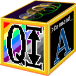

Deconvolve .Net
Free and Open Source Cross-Platform Deconvolution Software
 BiaQIm
BiaQIm |
 |
IP Suite
|
Terms of Use
This BiaQIm Image Processing Suite software is provided as open source free software under the terms of the GNU General Public License v. 3.0. It is provided ‘as is’, without any warranty.
Also note that all information, downloads, links and other services provided via this website is subject to this Disclaimer (click here to read it). In particular you agree not to hold Dr Paul J. Tadrous liable for damages of any kind resulting from the use or attempted use of any resource from this website.
The Software: BiaQIm Image Processing Suite (BIPS)
The BiaQIm image processing suite comes in both binary form (executables for MS Windows, macOS and Linux) as well as source code. The user manuals are also available as a seprate download. All these resources can be downloaded from the Downloads page at the www.Bialith.com website. The link below will take you directly to that page.
Click here to go to my dowloads page for the software
Simple Step-by-Step 2D Deconvolution with BiaQIm
The BIPS comes with a 2D deconvolution demo which you can follow using a step-by-step guide. There is also
this YouTube video which shows you how to install the BIPS and follow the deconvolution guide on MS Windows and Linux with tips for macOS users.
DemoBlind: Blind Deconvolution of a 2D Image
This demo contains all data and batch files you need to perform blind deconvolution of a 2D image and also demonstrates the GUI capabilities of my deconvolution software to allow you to see the deconvolution as it happens. This YouTube video demonstates how to run the demo on MS Windows and Linux with tips for macOS users. You will need to install the BIPS first for this demo to work.
Click here to download DemoBlind.zip
Demo3D: Deconvolution of a 3D Volume
This demo contains all data and batch files you need to perform deconvolution of a 3D volume (a stack of 2D images) and also demonstrates the GUI capabilities of my deconvolution software to allow you to see the deconvolution as it happens. It does not contain the deconvolution software, however, so you must first have downloaded and successfully installed the BiaQIm image processing suite before this demo will work. Read the ReadMe.txt file that comes with the demo before attempting to run it. This demo package was designed to run on MS Windows. You can run it under WINE on Linux but the updating display GUI will not be seen in that case. The ReadMe file will give more details.
Click here to download Demo3D.zip
Demo1D: Deconvolution of a Sound File
NOTE: THIS IS NOT A SIMPLE DOUBLE-CLICK DEMO BUT REQUIRES YOU TO BE FAMILIAR WITH THE USE OF THE COMMAND LINE.
This demo contains all data and batch files you need to perform BOTH convolution AND deconvolution of a 1D signal (in this case a .wav sound file). It does not contain the deconvolution software, however, so you must first have installed the BIPS for this demo to work. Read the ReadMe.txt file that comes with the demo before attempting to run it.
This demo also includes an additional program to convert the .wav sound file into a raw 1D signal for processing. This program is called WavtoRaw.exe and is heavily based on source code authored by WolfCoder and modified and compiled by myself for this demo.
In order to run this demo you will also need to have installed third party software called SoX (SoundExchange). This is Open Source free software written by Chris Bagwell, Lance Norskog and sundry contributors. This is released under the terms of the GNU General Public License (click here to read it)
Click here to download Demo1D.zip
Support this Open Source Initialive
If you find this software useful please consider supporting its development by donating to my work via my Optarc.co.uk PayPal donation link or joining my PUMA Microscope Patreon. Here are the links:
|